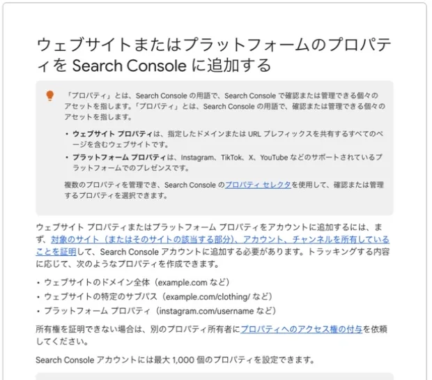

ホームページは、サーバーへ置けば自動的に検索結果へ並ぶわけではありません。公開してよい状態を確認し、Google Search Consoleで所有権を確かめ、サイトマップの場所を伝えた後も、クロールとインデックスの状態を見ていく必要があります。ここでは、開業準備で迷いやすい順番を、公開前と公開後に分けて整理します。
この記事のポイント
- 公開前に、法的表示・連絡先・フォーム・検索制御を「公開ゲート」で点検する
- サイト全体を一括管理する場合はDomainプロパティを選び、DNSで所有権を確認する
- サイトマップ送信はインデックス保証ではなく、公開後の確認の出発点と考える

最初に「公開」と「検索への登録」を分けて考える
公開とは、URLでページが表示される状態です。検索への登録は、Googleがページを発見・取得・評価し、インデックスへ保存する別の工程です。まず利用者が閲覧できるかを確認し、その次に検索エンジンへ伝える設定を進めます。
今回のサイトでは、GitHub上の正本を更新し、確認済みの内容をXServer Staticへ反映します。正本、変更履歴、公開結果を分けることで、不具合の原因を追いやすくしています。サーバーIPはDNS等から確認できる場合がありますが、管理画面の認証情報、APIトークン、復旧情報などの秘密値は公開しません。
公開ゲートを通してから検索エンジンへ知らせる
開業前は「ページが完成したか」だけでなく、「今、公開してよい内容か」が重要です。事務所名、受付開始時期、料金、所在地、連絡先、資格や実績に未確定情報がなく、管理用ページや古い料金表が公開領域へ入っていないことを点検します。
| 公開ゲート | 確認する内容 |
|---|---|
| 内容 | 名称、所在地、連絡先、料金、営業時間、サービス範囲が正本と一致 |
| 法的表示 | プライバシーポリシー、誤認を招く実績・保証表現、受付可能時期 |
| 操作 | フォーム送信、自動返信、電話・メールリンク、スマホ表示 |
| 検索制御 | noindex、robots.txt、canonical、旧URL、サイトマップ |
| 公開物 | 管理ツール、下書き、設定ファイル、秘密値が含まれていない |
メンテナンス表示を外す前に、公開URLで画像、リンク、フォームを実操作します。スマートフォンとPCの両方で確認し、公開後にも同じ点検を繰り返します。
サイト全体を管理するならDomainプロパティを選ぶ
Domainプロパティは、http・https、wwwの有無、サブドメインをまとめて扱えます。登録時に表示される所有権確認用のDNSレコードを、ドメイン管理会社のDNS設定へ追加します。この所有権確認はホームページの一般公開前でも進められます。検索クロールを許可し、サイトマップを送信するのは公開ゲートを通過してからにします。特定のURL範囲だけを管理したい場合やDNSを変更できない場合は、URLプレフィックスも選択肢です。
- Search Consoleで、管理範囲に応じて「ドメイン」または「URLプレフィックス」を選ぶ
- Domainプロパティでは、表示されたDNS確認レコードをドメイン管理会社の画面へ追加する
- DNSの反映を待ち、Search Consoleで「確認」を実行する
- 確認完了後も、所有権を維持するためDNSレコードを残す
確認レコードは必要な担当者だけが扱います。DNSはメール認証にも使うため、一括削除すると別の機能まで止まりかねません。変更前に現在値を記録し、各レコードの目的を台帳へ残します。
サイトマップを送信し、重要ページへの入口を伝える
サイトマップは正規URLを一覧にしたファイルです。Search Consoleから送信する操作は、ファイルの場所をGoogleへ知らせるもので、ファイル自体をアップロードするものではありません。
送信済みでも、すべてのURLがインデックスされる保証はありません。noindex、誤ったcanonical、重複、サーバーエラーなどがあれば登録されないことがあります。公開してよい正規URLだけを含め、内部リンクからもたどれる状態にします。
公開後は「エラーがないか」ではなく「意図どおりか」を見る
- トップ、主要サービス、料金、事務所案内、問い合わせが公開URLで開く
- HTTPSへ統一され、canonicalが実際の正規URLを指している
- Search Consoleのページ登録状況に、意図しない除外がない
- サイトマップへ管理ページ、下書き、重複URLが入っていない
- 検索パフォーマンスで、想定外の名称・地域・古い情報が表示されていない
- 記事追加やURL変更のたびに、内部リンクとサイトマップを更新している
ページ追加後はリンク切れと検索結果の見え方を確認します。ページの追加・修正履歴は内部で管理し、必要な再点検へつなげます。
よくある質問
- サイトマップを送信すれば、必ず検索結果に載りますか？
- いいえ。サイトマップの送信は、Googleにサイトマップの場所を知らせる手段であり、クロールやインデックス登録を保証するものではありません。内容、内部リンク、公開状態も合わせて確認します。
- DomainプロパティとURLプレフィックスは、どちらを選びますか？
- サイト全体を継続して管理するなら、http・httpsやサブドメインをまとめて確認できるDomainプロパティが便利です。特定のURL範囲だけを確認したい場合やDNSを変更できない場合はURLプレフィックスも選べます。Domainプロパティの所有権確認にはDNSレコードを使用します。
- 所有権確認が終わったら、DNSの確認レコードを削除してよいですか？
- 削除しないでください。Googleは、所有権を維持するために確認レコードを残すよう案内しています。DNSの整理をするときも、このレコードを誤って消さないよう管理します。
- 公開直後に検索結果へ出ないのは異常ですか？
- 直ちに異常とは限りません。公開URLへアクセスできること、noindexやrobots.txtで妨げていないこと、canonicalとサイトマップが正しいことを確認し、Search Consoleの状態を継続して見ます。
当事務所のサポート
ホームページ公開やSearch Consoleの操作そのものはWeb管理の領域ですが、公開内容には料金、受付方法、対応地域、採用、個人情報の扱いなど、事業運営と労務に関わる情報が含まれます。当事務所では、開業時の手続きと日々の運用が食い違わないよう、公開情報、問い合わせ後の対応、必要書類の受け渡しまでを整理します。